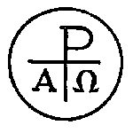

|
| A B C D E F G H I J K L M N O P Q R S T U V W X Y Z |
 Alpha and Omega are the first and the last letters, respectively, of the Greek alphabet. They have been employed from the fourth century as a symbol expressing the confidence of orthodox Christians in the scriptural proofs of Our Lord's divinity. This symbol was suggested by the Apocalypse, where Christ, as well as the Father, is "the First and the Last" (2:8); "the Alpha and Omegain Scripture), the first and the last, the beginning and the end" (cf., 22:13; 1:8). Clement of Alexandria speaks of the Word as "the Alpha and the Omega of Whom alone the end becomes beginning, and ends again at the original beginning without any break" (Stromata IV.25). Tertullian also alludes to Christ as the Alpha and Omegain Scripture) (De Monogamiâ, v), and from Prudentius (Cathemer., ix, 10) we learn that in the fourth century the interpretation of the apocalyptic letters was still the same: "Alpha et Omega cognominatus, ipse fons et clausula, Omnium quae sunt, fuerunt, quaeque post futura sunt." It was, however, in the monuments of early Christianity that the symbolic Alpha and Omegain Scripture) had their greatest vogue. The earliest date at which this symbol occurs is in the year 295, in a dated inscription of Rome. In this example, however, it is to be noted that the Omega takes precedence, and that both letters form part of the inscription, thus:
VIRGO MOR(T)VA ES(T) TVS [OMEGA] ET. A NVLLINO CON(S)
(. . . died, a virgin Tuscus and Anullinus being consuls).
The question whether this symbol in its regular form, was in use before the Council of Nicaea (325) has not yet been settled definitely. If so, it was of very rare occurrence. In a fresco which dates from the middle of the fourth century in the "great cave" of the catacomb of Praetextatus, Alpha and Omegain Scripture) are found in connection with the monogrammatic cross. The oldest inscription in which the letters occur in their traditional form dates from 364. From this time on they were a favorite symbol of the orthodox Christians (the Arians regarded it with disfavour and they are found on the monuments in all parts of early Christendom. The apocalyptic letters were represented either (1) alone, or (2) in connection with human or other figures, or (3) with other symbols. Examples of the first class, to which belongs the inscription of 364, are rare. The second class also is not very numerously represented; probably the most interesting example of it is a panel of the fifth century door of St. Sabina's where Alpha and Omegain Scripture) are carved on either side of the risen Christ. Monuments of the third class, representing Alpha and Omegain Scripture) in connection with another symbol, usually the monogram of Christ, are much more common than those of the two former classes. The minusculer form of Omega is, in nearly all cases, represented, though some examples of the upper-case Omega occur in the monuments of Africa and Spain. The words "Alpha and Omega" continued in use in the Mozarabic Liturgy; also in the ancient Irish Liturgy, e.g. in the famous Communion-hymn in the Antiphonary of Bangor.
APA citation. (1907). Alpha and Omega (in Scripture). In The Catholic Encyclopedia. New York: Robert Appleton Company. Retrieved April 26, 2010 from New Advent: http://www.newadvent.org/cathen/01332a.htm
MLA citation. "Alpha and Omega (in Scripture)." The Catholic Encyclopedia. Vol. 1. New York: Robert Appleton Company, 1907. 26 Apr. 2010 <http://www.newadvent.org/cathen/01332a.htm>.
Transcription. This article was transcribed for New Advent by Donald J. Boon.
Ecclesiastical approbation. Nihil Obstat. March 1, 1907. Remy Lafort, S.T.D., Censor. Imprimatur. +John Cardinal Farley, Archbishop of New York.
Contact information. The editor of New Advent is Kevin Knight. My email address is webmaster at newadvent.org. (To help fight spam, this address might change occasionally.) Regrettably, I can't reply to every letter, but I greatly appreciate your feedback — especially notifications about typographical errors and inappropriate ads.
{kind=link}